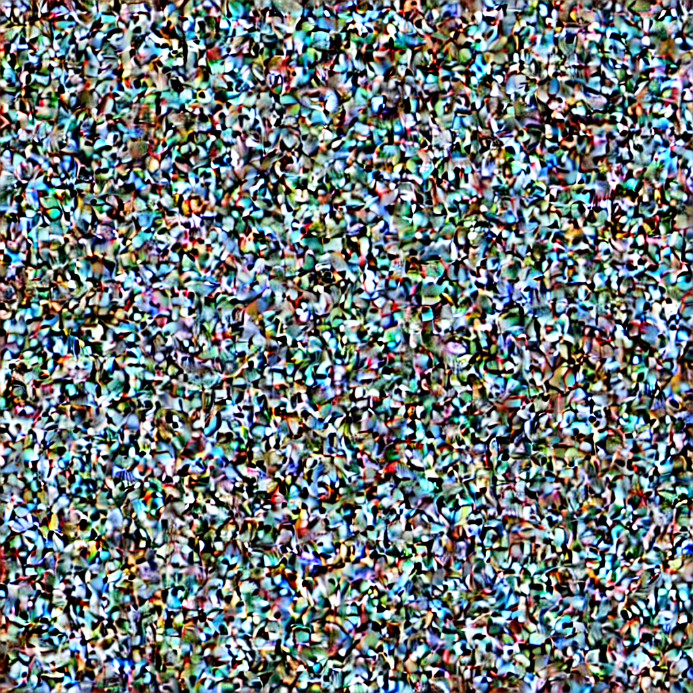
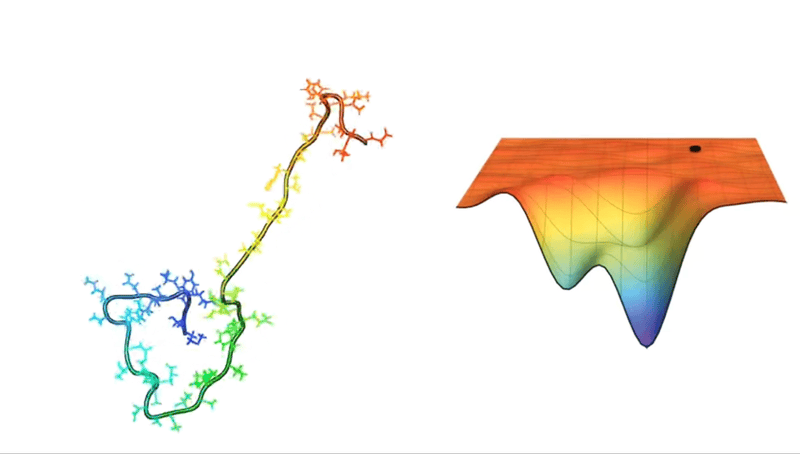
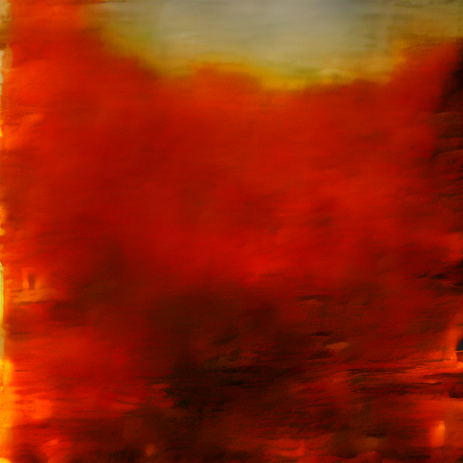

In Defense of Disintegration
a critique of technologically-imposed coherence in artificial intelligence and other compression-based software infrastructures
Grayson Earle

On William Basinski · The Disintegration Loops (2002)
The Disintegration Loops is a 2002–2003 four-album series by composer William Basinski—ambient, drone, and tape music made from old Muzak recordings on magnetic tape that physically degraded as he played and recorded them.
The tape's decay isn't a loss of data; it's a rupture. It reveals the fragile seam between an ordered system and the chaotic potential of the infinite volume beneath the surface.
The Smiley and the Emoji
The text-based smiley : ) was a disobedient hack—a repurposing of punctuation against its intended use. The emoji is its replacement: a coherent, consortium-controlled asset, each character standardized, licensed, and managed. 👮♂️ 👎
The Dictatorship of the Past
“A logical limit of machine learning classification...is the inability to recognise a unique anomaly that appears for the first time...As a technique of information compression, machine learning automates the dictatorship of the past, of past taxonomies and behavioural patterns, over the present. This problem can be termed the regeneration of the old — the application of a homogenous space-time view that restrains the possibility of a new historical event.”
On Exactitude in Science
“...In that Empire, the Art of Cartography attained such Perfection that the map of a single Province occupied the entirety of a City, and the map of the Empire, the entirety of a Province. In time, those Unconscionable Maps no longer satisfied, and the Cartographers Guilds struck a Map of the Empire whose size was that of the Empire, and which coincided point for point with it. The following Generations, who were not so fond of the Study of Cartography as their Forebears had been, saw that that vast Map was Useless, and not without some Pitilessness was it, that they delivered it up to the Inclemencies of Sun and Winters. In the Deserts of the West, still today, there are Tattered Ruins of that Map, inhabited by Animals and Beggars; in all the Land there is no other Relic of the Disciplines of Geography.”
“cartographic silences ... positive statements of what is not intended to be there”
Spaces of Representation
The cartographic operation does not describe a territory that already exists; it constitutes the territory as a knowable and administrable reality. Rather than merely compressing an antecedent reality, the model dictates what qualifies as representable.
The Map is the Territory
“Second, maps are not just representations but also instruments. They are based on mathematical operations and they constitute a substantial part of a cultural practice. A main feature of the analysis of maps as cultural technologies is that it considers maps not as representations of space but as spaces of representation. The historicity that is of interest, in the first place, in connection with those spatial representations is not the historicity of the represented spaces. Instead it is the historicity of the space of representation itself.”
Not All AI Is the Same

CLIP and the U-Net
- CLIP
converts the text prompt into a vector, anchoring what the image should depict - U-Net
the denoising engine; predicts and removes noise step by step, steered by CLIP's anchor, until a coherent image emerges in latent space
The Intervention
def degrade_all_tensors(module, ratio, max_percent):
for name, param in module.named_parameters():
with torch.no_grad():
p_range = param.data.max() - param.data.min()
if p_range <= 1e-12: continue
mask = (torch.rand(param.shape) < ratio)
delta = max_percent * p_range
shifts = torch.empty(param.shape).uniform_(-delta, delta)
param.data[mask] += shifts[mask]
for i in range(num_steps):
degrade_all_tensors(pipe.unet, ratio=0.01, max_percent=0.05)
image = pipe(prompt).images[0]
image.save(f"step_{i:04d}.jpg")Phenomenology of the Rupture
Generated Images do not produce thought. Seeing the statistical average of a mountain is fundamentally not thought-provoking, in the literal sense. Encountering something non-normative or abstract prompts the viewer to think. What am I looking at? This question is already answered with generated imagery.

Plasticity as Disobedience
“The word plasticity thus unfolds its meaning between sculptural molding and deflagration, which is to say explosion. From this perspective, to talk about the plasticity of the brain means to see in it not only the creator and receiver of form but also an agency of disobedience to every constituted form, a refusal to submit to a model.”